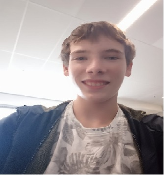

portofolio jelle.

naam: jelle de kok.
leeftijd: 14
hobby's: gamen ,progameren en sport.
geboren op 25.9.2004.
vragen vooropleiding en bijbanen:
link
vragen opleiding:
link
waarom heb je voor de opleiding hebt gekozen?
ik heb voor deze opleiding gekozen omdat progameren een hobby van me was (scratch).
Wat is je motivatie om hier te zijn?
mijn motivatie is dat ik graag dit vak wil leren.
Hoe zorg je ervoor dat je gemotiveerd blijft?
ik blijf gemotiveerd als ik meedoe in de les.
Wat ben je bereid om na de lessen nog te doen aan de opleiding?
ik ben berijd huiswerk te doen als dat nodig is.
Beschrijf je ontwikkelpunten?
ik wil mezelf ontwikkelen in progameren en met mensen omgaan.
Beschrijf bij elke vooropleiding hoe je het daar vond. Beschrijf wat je hebt geleerd en wat je binnen deze opleiding toe kan passen.
ik ben naar de bazisschool gegaan en de midelbare ik heb daar wiskunde, engels en nederlands geleerd wat ik bij deze opleiding weer moet gebruiken. (gok ik) ik vond de bazisschool saai en de middelbare te doen.
Beschrijf voor elke bijbaan wat je daar moest doen en wat je daar hebt geleerd en hoe je dat binnen deze opleiding kan toepassen.
ik heb kranten bezorgd en ik wou er toen ik begon er al mee stoppen maar ik heb doorgezet en het afgemaakt en dat moet miss ook hier.
wat zijn je vaardigheden die je bij bijbaanen en vooropleidingen hebt opgedaan en Hoe verwacht je deze te kunnen
gebruiken binnen het vak van Applicatie Ontwikkeling?
ik denk te kunnen doorzetten...... idk.